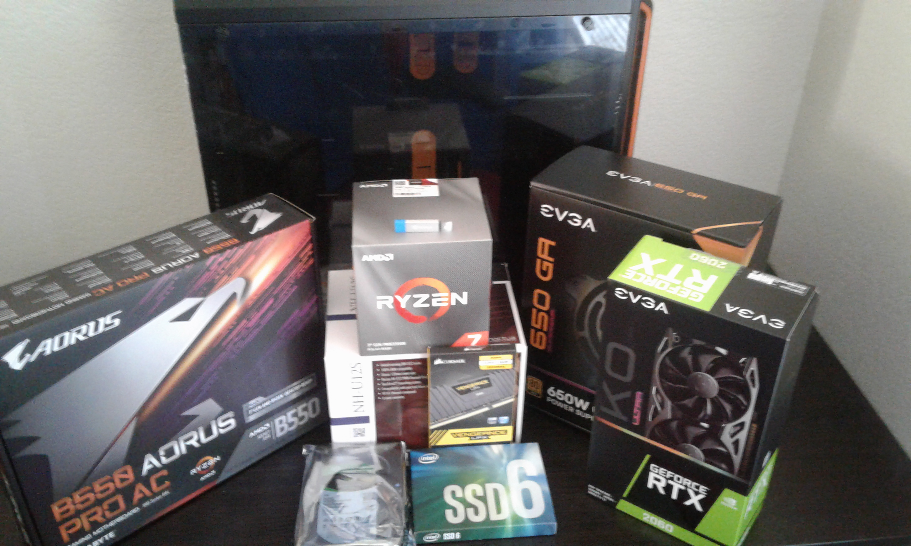

The computer is a fundamental part of our society today. From the calculators in our math classes, to the phones in our pockets, to even the supercomputers of the world. However, the world was not always this full of computers. When computers were first coming around, they took up a massive amount of space and energy to power. Now, they can be as small as millimeters in size, typically found in calculators and phones, as well as other devices. Computers contribute to our current standard of living throughout the world, as well as enabling us to do many things we want on a daily basis.
